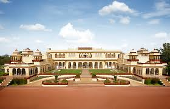

 The Rambagh Palace in Jaipur, Rajasthan is the former residence of the Maharaja of Jaipur and now a hotel, located 5 miles (8.0 km) outside the walls of the city of Jaipur on Bhawani Singh road. The first building on the site was a garden house built in 1835 for the wet nurse of prince Ram Singh II.. In 1887, during the reign of Maharaja Sawai Madho Singh, it was converted into a modest royal hunting lodge, as the house was located in the midst of a thick forest at that time. In the early 20th century, it was expanded into a palace to the designs of Sir Samuel Swinton Jacob. Maharajah Sawai Man Singh II made Rambagh his principal residence and added a number of royal suites in 1931. It is now a heritage hotel run by the Taj Hotels and resorts. In Rambagh Palace many celebrities had stayed in the past like British India’s Last Viceroy Lord Louis Mountbatten and Lady Edwina Mountbatten, Former American First Lady Jacqueline Kennedy, Queen Elizabeth and Duke of Edinburgh Prince Philip, Prince Charles and Lady Diana. Still now celebrities as well as the sportspersons consider to live in this hotel .The hotel is known as “Jewel Of Jaipur”. Jaipur rekindles the romance and mysticism of a bygone era of the Rajputana.
India Page